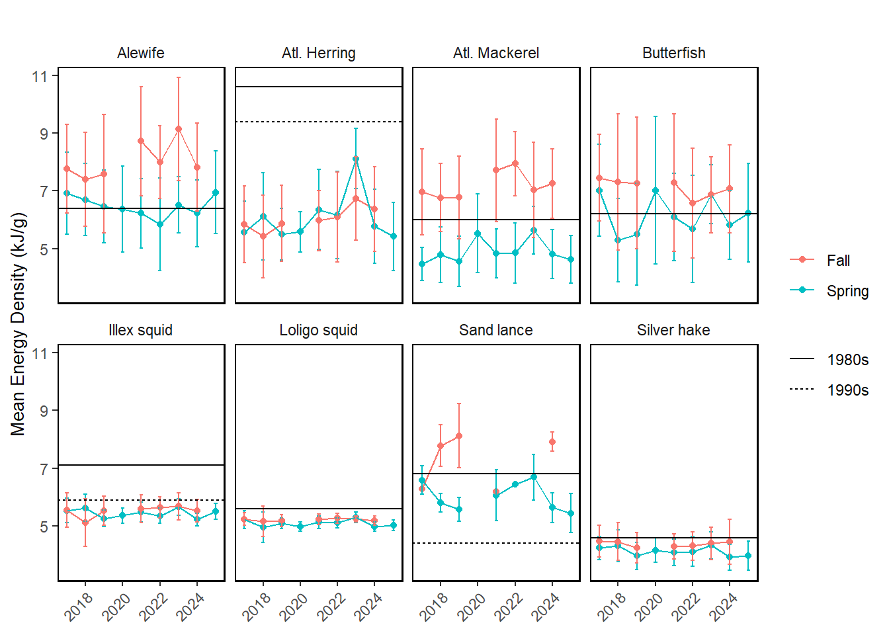

20 Forage Fish Energy Density
Last updated July 24, 2026
Description: The data presented here are the seasonal (Spring and Fall) energy density (kJ/g wet weight) for eight important forage species: alewife, Atlantic herring, silver hake, northern sand lance, Atlantic mackerel, butterfish, northern shortfin squid, and inshore longfin squid. Samples are obtained from the NEFSC seasonal bottom trawl surveys and processed at the Woods Hole Laboratory to estimate energy density.
Contributor(s): Mark Wuenschel, Joseph Warren
Affiliations: NEFSC
Indicator Family:
Indicator Category:
Synthesis Theme:
20.1 Introduction to Indicator
The energy density of prey, in conjunction with its mass, indicates the total amount of energy passing from lower trophic levels to higher predators. Therefore, the value of forage species to upper trophic levels is a function of their energetic quality and biomass. Fish energy density can vary widely in response to changes in ecosystem productivity and shifting physiological demands, such as metabolic increases due to rising temperatures. Furthermore, energetic variability (often several-fold) can be particularly notable in species that have seasonal energetic cycles related to reproduction, migration, or ontogenetic shifts in energy storage.
Forage energy density measurements from NEFSC bottom trawl surveys 2017-2025 are building toward a time series to evaluate trends.
20.2 Key Results and Visualizations
The line plots depict the mean energy density (kJ/g wet weight) for eight species across seasons and years. The black reference lines denote estimates from prior studies where available for comparison. The energy density of Atlantic herring from the NEFSC trawl surveys increased to over 7 kJ/g wet weight in spring 2023, declined since, and remains below estimates from the 1980s and 1990s (10.6-9.4 kJ/ g wet weight). Silver hake, inshore longfin squid (Loligo in figure), and northern shortfin squid (Illex in figure) remain lower than previous estimates [40,41]. Energy density of alewife, butterfish, northern sand lance, and Atlantic mackerel varies seasonally, with seasonal estimates both higher and lower than estimates from previous decades.
New in the 2026 SOE forage fish energy density indicator are split-panel bubble plots to illustrate spatiotemporal trends in forage species abundance and energy density across four ecological production units (EPUs): Mid-Atlantic Bight (MAB), Georges Bank (GB), Gulf of Maine (GOM), and Scotian Shelf (SS). The split-panels provide seasonal comparisons (Spring: left; Fall: right). Catch data from NEFSC bottom trawl surveys were aggregated to derive the mean catch (kg) per representative tow and mean energy density (kJ/g wet weight) for each species-year-season-EPU combination. Bubble size scales with mean catch, while fill intensity represents mean energy density (darker hues indicate higher values).


Mid-Atlantic

20.3 Implications
The nutritional content of forage fish changes seasonally in response to ecosystem conditions, with possible declines in energy density for Atlantic herring and Illex squid relative to the 1980s, but similar energy density for other forage species.
It is important to note/caveat that some of the previous estimates of forage fish energy density (from 1980s and 1990s) were based on very small sample sizes (sometimes 4 individuals). Recent work on Atlantic herring [42] shows that herring energy density was higher in summer (in between the spring and fall surveys reported here) and some summer values from 2021-2023 overlap with previous estimates.
20.4 Indicator statistics
Spatial scale: Full shelf and by EPU
Temporal scale: Spring and Fall Bottom Trawl Survey
Variable definitions
20.5 Get the data
Point of contact: Mark Wuenschel (mark.wuenschel@noaa.gov)
ecodata dataset: ecodata::energy_density
Tech Doc link: https://noaa-edab.github.io/tech-doc/energy_density.html
20.5.2 Accessibility Constraints
Email mark.wuenschel@noaa.gov for further information. Data tables are being created to make this readily available soon.